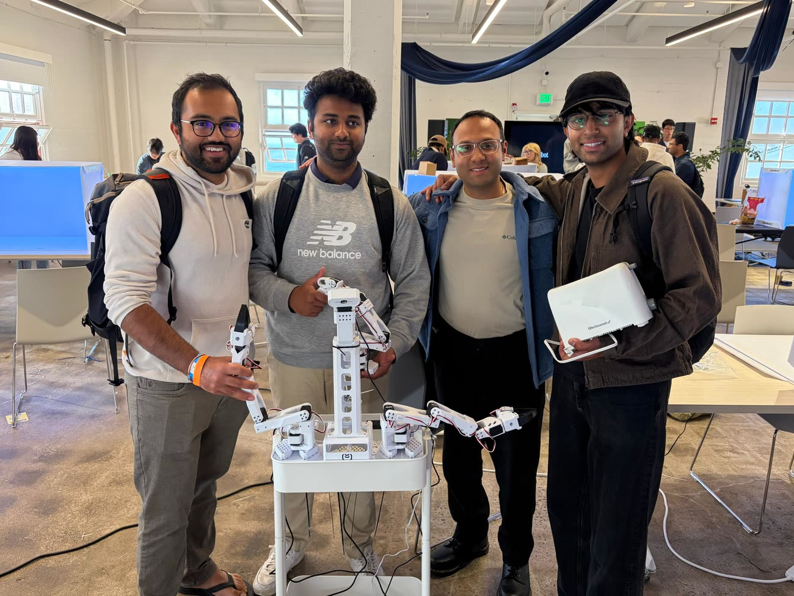
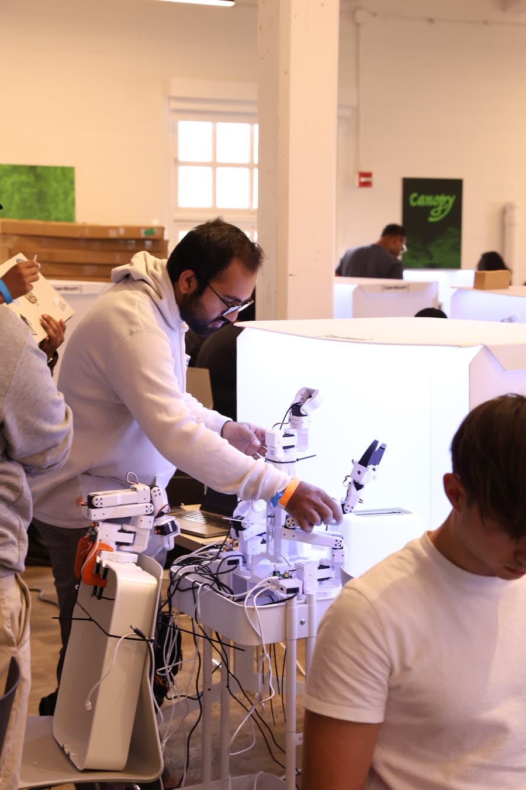

Weekend hackathon: toasting bread.
Four people, two days, one task: put a slice of bread into a toaster, press the button, and take the toast back out once it pops. It sounds trivial. It is three separate manipulation problems chained together.
Why it is harder than it sounds
Toasting bread is a good hackathon task precisely because it looks like one thing and is actually three, each with a different failure mode, and a mistake in any of them ends the run:
- Picking up the bread is a deformable-object grasp. A slice bends, sags and slips, so the gripper cannot treat it as a rigid body.
- Pressing the lever needs force applied in a specific direction against a compliant, spring-loaded mechanism that pushes back and only latches at the end of its travel.
- Retrieving the toast means reaching into a narrow slot, where the clearance is small and the consequences of a misjudged approach are worse than a dropped grasp.
With two days there was no time to engineer any of that explicitly, which is the point. We teleoperated demonstrations and trained ACT and SmolVLA policies to reproduce the whole sequence.


The result
The full sequence, end to end, in one run.
What came out of it
This weekend is why the rest of the home lab exists. Getting a learned policy to do a real household task in two days was enough of a signal that we bought the robot and kept going, which led directly to the library robot picking and stacking books and then to the desk cleanup pen task.
The pen task is where it got genuinely interesting, because that is where a policy that looked like it had solved the job turned out to have memorized a drop location rather than learned the goal.